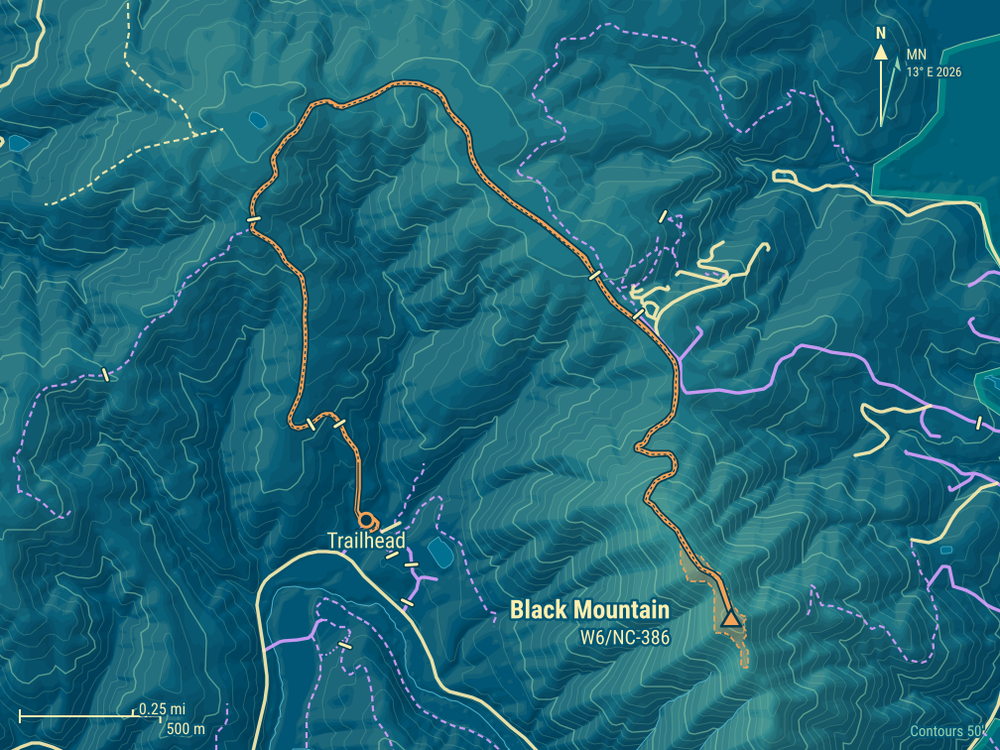
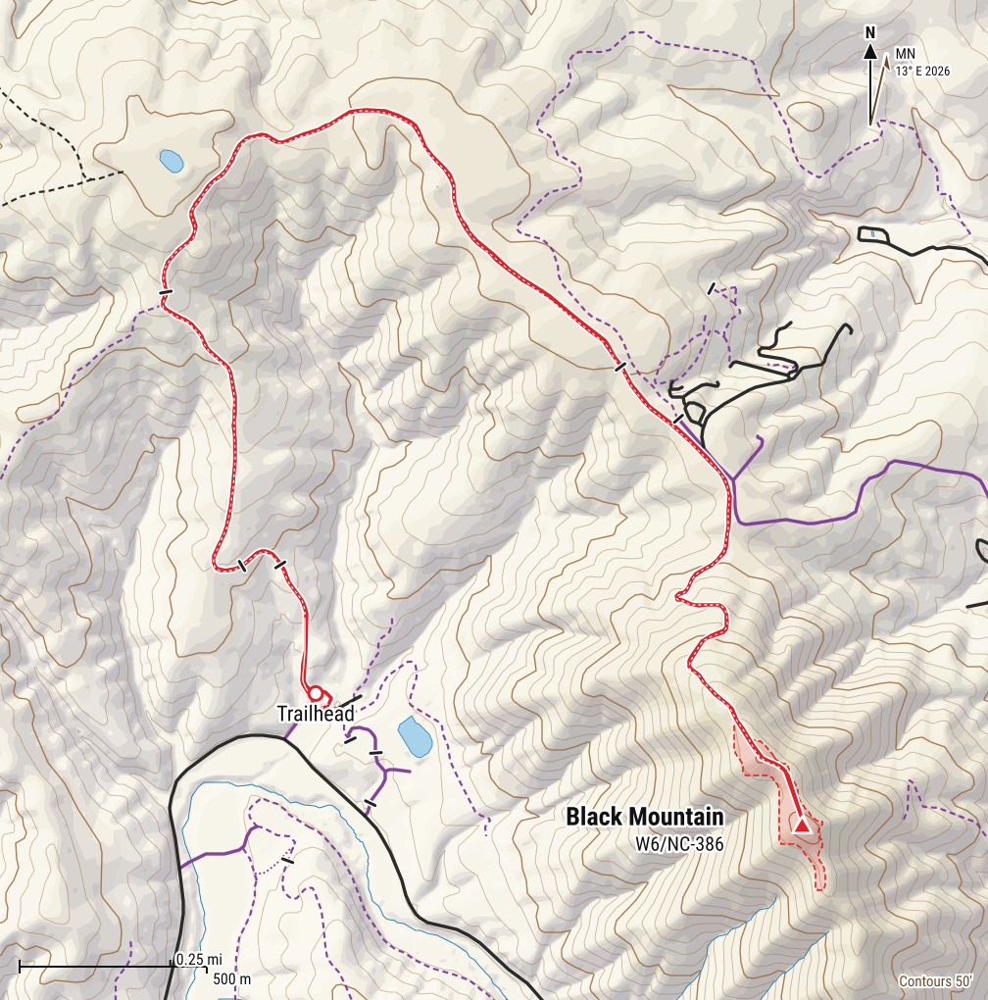
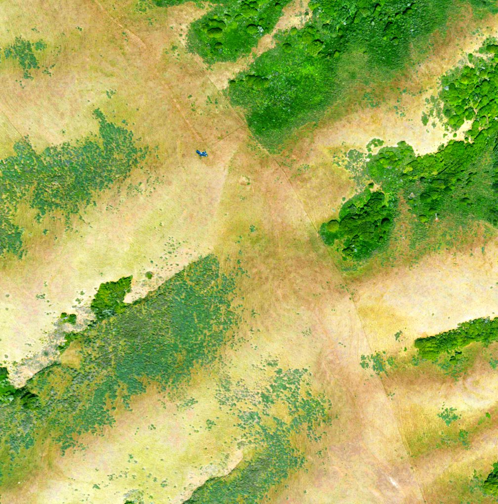
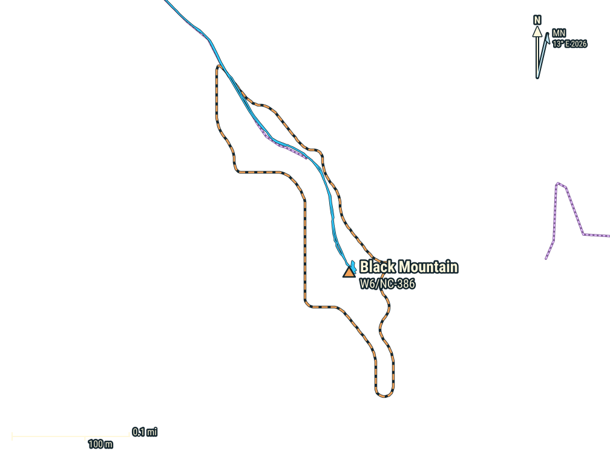
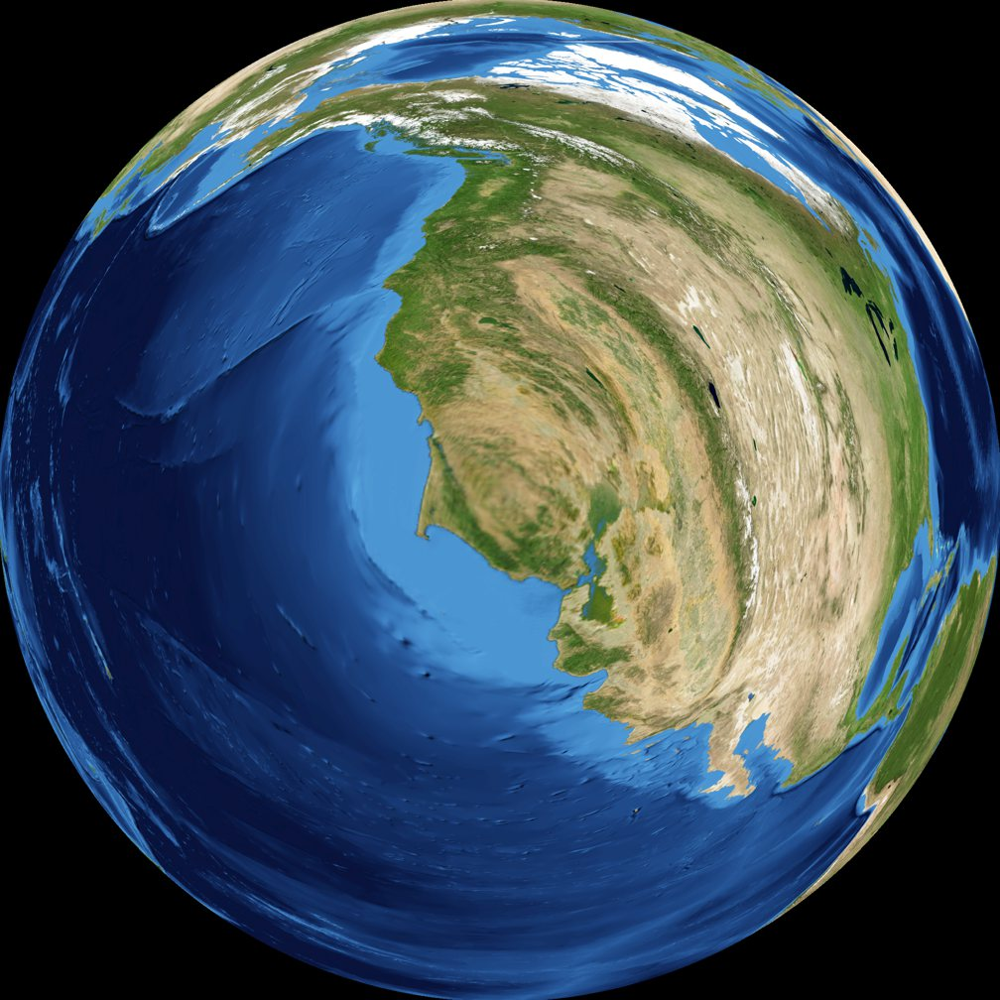
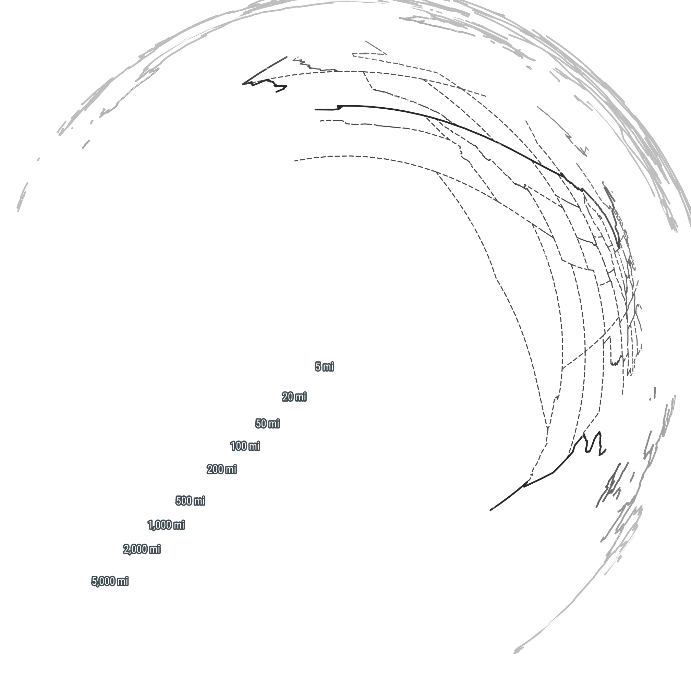

Black Mountain W6/NC-386
Summit
- Summit
- W6/NC-386 · Peakbagger
- Points
- 1
- First activation
- AJ6X, 2 May 2026
- Elevation
- 1,280′ (390 m)
- Prominence
- 726′ (221 m)
- Isolation
- 3.7 mi (5.9 km)
- Region
- Northern Coastal Ranges
- County
- Marin, California
- Grid
- CM88ob
- Land
- Private
- Wilderness
- None
- POTA park
- None
Route and radio
- Trailhead
- Black Mountain Ranch, 50′ (15 m)
- Access
- Paved road
- Red tape
- Private ranch, only on MALT events; free, $30 donation suggested
- Round trip
- 6.2 mi (10.0 km), 3.5 h
- Elevation gain
- 1,480′ (451 m)
- Transport
- Hiking, Class 1
- Cell service
- Top: T-Mobile good · way up: from 1,300′
- Towers, power lines
- power line 800 m SW
RF nearby: 751 licensed stations within 30 km
What to bring, the cheapest radio that still works here, on the AJ6X RF scale: HF: rung 1 of 4, uSDX or QMX, about $150: anything works. VHF: rung 1 of 4, Baofeng, about $25: anything works.
| Station | Service | Frequency | ERP | Where | Terrain | dBµV/m |
|---|---|---|---|---|---|---|
| KCBS | AM radio | 740 kHz | 50 kW | 21.6 km E | −7 dB | 93 |
| WQNE547 | business radio | 152.382 MHz | 75 W | 1.7 km SE | in sight | 91 |
| WNGM656 | business radio | 462.8 MHz | 2.8 kW | 14.4 km E | in sight | 88 |
| KXH289 | public safety | 462.9–463.2 MHz | 600 W | 7.4 km SE | in sight | 87 |
| KCZ438 | business radio | 158.265 MHz | 180 W | 4.7 km SW | in sight | 86 |
| KML964 | public safety | 46.12–46.5 MHz | 144 W | 4.0 km W | in sight | 85 |
| KML958 | public safety | 46.12–46.28 MHz | 300 W | 7.4 km SE | in sight | 84 |
| KMA224 | public safety | 39.24 MHz | 300 W | 7.4 km SE | in sight | 84 |
| WNGM656 | business radio | 462.8 MHz | 2.8 kW | 23.0 km SE | in sight | 84 |
| KNKJ371 | paging | 931.163 MHz | 1.09 kW | 14.4 km E | in sight | 84 |
| WPHY735 | public safety | 151–156.2 MHz | 260 W | 7.4 km SE | in sight | 84 |
| WPPV514 | public safety | 489.913 MHz | 1 kW | 14.4 km E | in sight | 84 |
Field strength at the summit from each station's power and distance, less an estimate of the terrain in between. A rough guide, by a rung either way: antenna patterns aren't known, and the noise from a site's equipment is in no licence. Data: FCC licences (2026-10-24), NOAA Weather Radio, OpenStreetMap.
Further down: Map · Aerial photo · QSO map · Log
Black Mountain rises right above Point Reyes Station in West Marin, between the town and Nicasio Reservoir. It’s also known as Elephant Mountain. It’s all private ranch land: grassy slopes, cattle and sheep, and great views over the reservoir. It’s been a SOTA summit since 2012, but nobody had ever activated it.
My friend Tony KM6AM told me about the Marin Agricultural Land Trust (MALT), which organizes open days on private Marin ranches. We talked about activating Black Mountain on a 2025 hike, but it fell through because of competing kids’ activities. This time I found out about the Day on the Ranch event just a few days before it was scheduled. With spots still available, I signed up and asked Tony if he could join. He had something else to do that day. In fact, so did I: I was volunteering for the weekend at the Henry E. Bothin Youth Camp, and I didn’t know yet if I could actually make it.
Later that year, another MALT hike took me to Hicks Mountain, just across Nicasio Reservoir.
The ranch
The ranch is about 1,200 acres on the west side of the mountain, from the edge of town down to the floodplain of Lagunitas Creek. Both the ranch and the mountain are named after James “Santiago” Black, who made a fortune ranching cattle during the Gold Rush. At one point he was the biggest property taxpayer in Marin, and he was also mayor of San Rafael, a judge and the county coroner. (Black Mountain Ranch)
MALT bought the development rights in 1993, so the ranch stays agricultural and can never be subdivided. In 2021 it changed hands for only the third time since the Mexican land grant: Marcel Houtzager, a money manager from Ross, bought it from Dave Osborn for $8.8 million. He’s not a rancher himself, and he calls MALT a co-owner. (Point Reyes Light)
Today the ranch hosts many small operations. Stemple Creek Ranch (Loren and Lisa Poncia) grazes about 140 Black Angus beef cattle, Three Bags Full keeps about 60 Jacob sheep for wool, The Farm grows flowers and vegetables, Fibershed works on local fiber and dye plants, and Point Reyes Lavender grows, well, lavender. Little Wing Farm grew vegetables and flowers for its farm stand by the road, but it appears to have closed. The three-story barn by Point Reyes–Petaluma Road has been renovated, too. (Black Mountain Ranch, MALT)
Getting there
The ranch is open only for organized events. MALT’s Day on the Ranch was on Saturday, 2 May 2026, from 1 to 4 PM: live music, picnics, local cheese and soft serve, food and wool from the ranch’s farmers, and hikes. It’s free, with a suggested $30 donation. MALT also holds hikes here in the fall (the latest on 24 October 2026): six miles round trip and about 1,200′ of climbing to the top, steep in places and exposed to sun, wind or rain, or a shorter walk and a picnic. My GPS says 6.2 miles and 1,480′, the whole hike. The ranch also runs its own tours, hikes and workshops.
- When: whenever MALT organizes the next hike.
- Water: none on the trail.
- Time: the event ran from 1 to 4 PM. That was enough time to set up properly, operate for about half an hour, and pack away.
- Sun: none that day: nice and cool weather for hiking. I think it might get very hot in the summer, and there’s no shade.
- Fog and wind: on this day it was cool and cloudy, perfect for a quick hike. On a sunny day, one Peakbagger trip report estimated sustained winds of 30 mph or more near the top, so bring a layer.
- Dogs and smoking: no dogs other than service animals, and no smoking: these are working ranches. (MALT’s event policies)
- Toilets: portable toilets at the trailhead.
- Ticks: it was wet, and parts of the trail were overgrown. I kept checking, but found none out there. The only one we saw all day was in the car on the way down, crawling on a fellow hiker’s leg.
- Cell: Verizon worked on much of the hike; not sure about the trailhead.
Trailhead
On the day of the hike I was able to sign up for the morning and evening shifts at the Bothin Camp, leaving a window just big enough for the Black Mountain hike. So I jumped in the car and drove the 15 miles, about half an hour, to Black Mountain.
I arrived exactly on time, and got the last parking spot on the side of the main road; cars arriving after me were sent to an overflow parking lot. I guess getting there 10–15 minutes early is a solid plan.
This was a Day on the Ranch, with plenty of activities. They looked like great fun, and I plan to return for a next event, with the kids. But that day I had a different plan. So I checked in, then quickly headed up the mountain.
The way up
My GPS says about 3 miles and 1,400′ of climbing to the top. On this hike the MALT staff and volunteers were relaxed, with visitors hiking both ahead of and behind the guides. Thanks to the cool, cloudy weather, I could make good time on the way up.
The hike started on a nice ranch road, going up at a good slope: not too steep, not too flat.

The route loops away from the mountain, steadily gaining elevation towards the ridge.


At some point the ranch road became much less traveled, and overgrown with grass. Every five minutes or so I stopped to check myself for ticks, but luckily I didn’t spot any.


Soon after, the very steep climb to the summit started.

A passenger car caught up to me on the incredibly steep road. I couldn’t believe an ordinary city Subaru had enough traction to make the climb.
Summit
Then the slope started to level off, and I made it to the false summit, which has a radio tower farm. The car was parked there: it turned out to be someone servicing the towers.


I kept walking briskly to the summit.
The views from the top reach the peaks of the Point Reyes peninsula. It was cloudy for me, but on a clear day you can see Mount Saint Helena to the northeast, and as far as Mount Diablo to the south (from a Peakbagger trip report).
Here I took pictures of the summit and my antenna mast.

Activation
2 May 2026 First activation
- Radio
- Elecraft KX2
- Antenna
- 40m EFHW
- Antenna support
- Carbon fiber mast, guyed with 3 ground spikes
- Power
- 5 W
- RFI
- Low
- Activator
- AJ6X
- QSOs
- 11
- Bands
- 40m (8), 15m (3)
- Modes
- CW (11)
- On air
- 21:48–22:16 UTC
First activation of Black Mountain! This time I had time to set up properly, operate for about half an hour, and pack away. I started on 40m CW with the usual chasers, Tony KM6AM among them: 8 contacts in 16 minutes (21:48 to 22:04 UTC). Throughout the activation, curious visitors stopped by to find out what I was doing.
Despite the communications site on the false summit nearby, the RFI was low. After the 40m contacts, I switched to 15m for some DX, and quickly got the ubiquitous French station, Christian F4WBN, and two of the usual Japanese stations, Kaz 7N1FRE and Take JS2TNW. 15m was wide open into Japan, and there was a good pileup of Japanese stations going by now, but I was running out of time, and I was the only person left on the summit. So I abruptly sent QRT, packed up and left.
A reminder: keep an eye on the clock, and on the summit emptying out. On an event hike, the hikers heading down are the signal to wrap up, pileup or not.
And back
Soon I caught up with Mark KN6KZH from San Rafael, who was also on the hike but didn’t bring a radio along. We had a nice long chat on the way down, about amateur radio, SOTA, RACES, and so on. Back on the ridge, a member of the MALT staff offered us a ride, so the way down was much faster than expected. In the car, we saw the only tick of the whole day, crawling on Mark’s leg.
Back at the trailhead the party was over, so I got into the car and drove back to the Bothin camp for my evening shift.

Map


Cell service, 4G, from the carriers' maps: good fair weak
Aerial photo


QSO map


Azimuthal equidistant, log (linear inside 10 km) distance scale, out to 10,301 km, centred on the summit: every QSO is a straight line, true in direction. Chasers at their location on QRZ, to about 5 km; summit-to-summit contacts at the other summit. Rings: what the skimmers of the Reverse Beacon Network heard of our calls during the activations, each skimmer at the centre of its grid square. Earth: NASA Blue Marble.
Log
2 May 2026 · 11 QSOs
| UTC | Call | Band | Mode |
|---|---|---|---|
| 21:48 | KF6SWU | 40m | CW |
| 21:50 | WW7D | 40m | CW |
| 21:51 | KE6X | 40m | CW |
| 21:54 | NW7E | 40m | CW |
| 21:56 | KM6AM | 40m | CW |
| 21:59 | W7DLZ | 40m | CW |
| 22:01 | K6KM | 40m | CW |
| 22:04 | N6RUN | 40m | CW |
| 22:11 | F4WBN | 15m | CW |
| 22:13 | 7N1FRE | 15m | CW |
| 22:16 | JS2TNW | 15m | CW |